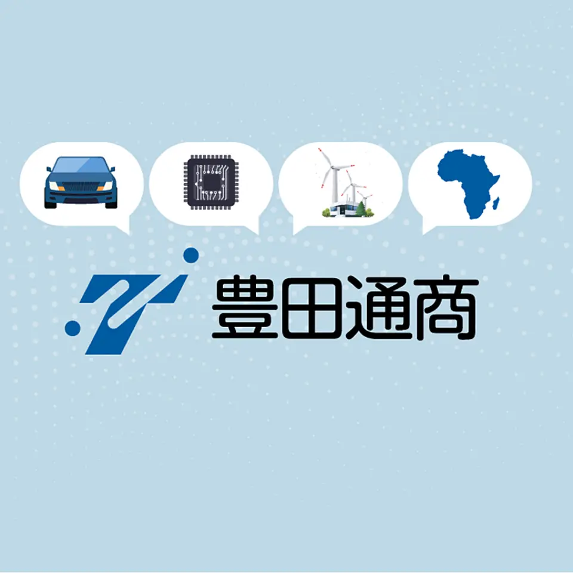
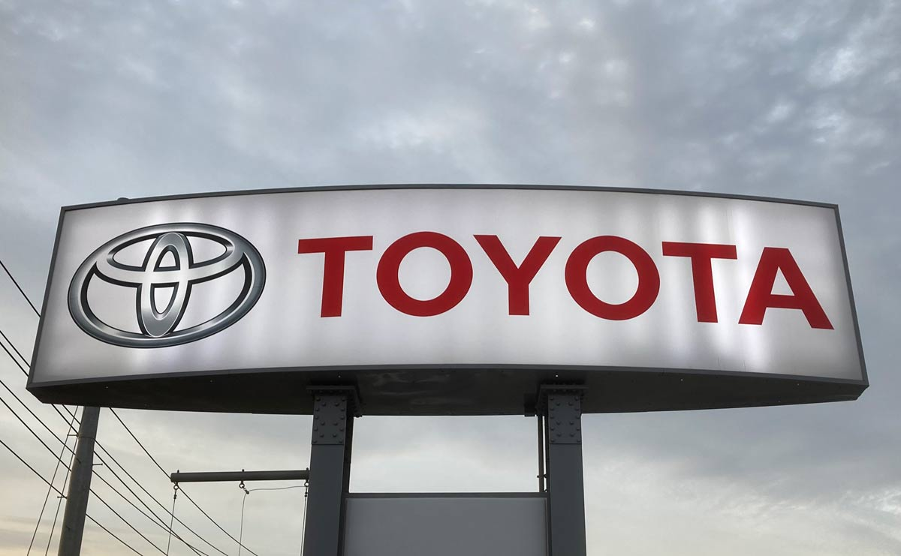

【解説】米中間選挙で「共和党完敗」5つの疑問
発行日時：2026-11-05 05:30:02 JST
NewsPicks原文を読む
あなたに関係ありそうな理由
米国の政策や市場に影響する選挙結果を、識者の異なる見方から読み解けます。
概要
米国の中間選挙で民主党が上下両院の過半数を獲得した。NewsPicksは、共和党の敗因やトランプ大統領の支持基盤、今後の政権運営について、みずほ総合研究所の安井明彦氏と上智大学の前嶋和弘教授に聞いた。両氏は、物価高への不満や政治への不信が選挙に影響したとみる一方、支持者がどこまで離れたかについては見解が異なる。
安井氏は、生活に余裕を持てない有権者の不満に、大企業や富裕層を優遇しているのではないかという政治不信が重なったと指摘する。2024年に支持を広げた若い男性やヒスパニックなどの比較的緩やかな支持層だけでなく、中西部の苦戦は、もともとの支持者にも離反が及び始めた可能性を示すという。
前嶋氏は、中間選挙では大統領本人が候補にいないため熱心な支持者が投票に行きにくく、歴史的に与党が議席を減らしやすいと説明する。共和党支持者やMAGA層のトランプ氏への支持率は依然高いとして、中心的な支持者が離れたという結論には慎重だ。記事の表示コメントでも、塩崎悠輝氏は若年層などの得票減を示し、清水勝彦氏は投票率のデータを確認したいと述べた。
議会の多数派が変わっても、政策が直ちに反転するとは限らない。安井氏は、トランプ氏が大統領令を使う手法を確立しており、民主党の法案にも拒否権を使えると説明する。前嶋氏は一方で、議会には政権を調査する権限があると指摘する。外交や通商では大統領の権限が大きく、残る任期の動きに注意が必要だという。
日本への影響では、前嶋氏は米国のデータセンター許認可に州が関わることを挙げ、日本企業の投資への影響を懸念する。2028年大統領選についても、民主党の候補者を巡る両氏の評価は同じではない。選挙結果は確認できても、その理由や将来の政策は分析と予測を含む。議会の調査、州の対応、次の候補者選びがどう進むかを見ていきたい。
記事中の図は日本時間11月5日13時時点の集計として、上院では民主党系54議席、共和党44議席、未確定2議席を示す。下院は民主党240議席、共和党147議席、未確定48議席だった。集計時点を伴う数字であり、最終結果として固定しないことが必要だ。議会の構成は、開票の進行とともに変わり得る。
仕事や会話で使える一言
選挙の結果と、その理由についての見方の違いを押さえたいですね。
【転換点】AI先進企業は「使いすぎ」問題にどう向き合うか？
発行日時：2026-11-05 05:30:01 JST
NewsPicks原文を読む
あなたに関係ありそうな理由
AIを使う量と費用を把握し、仕事の成果につなげる方法を考えられます。
概要
企業でAIの活用が進む一方、想定以上に膨らむ利用費が新しい課題になっている。AIの処理単位であるトークンを大量に使う「トークンマキシング」が広がる背景には、使い込むほど成果が増えるという期待がある。しかし従量課金や利用枠を超える追加料金があると、同じ人数でも仕事や使い方によって費用は大きく変わる。
マネーフォワードが2026年9月に行った調査では、企業担当者の79.0％がAI利用で予算超過や想定外の費用を経験し、77.5％が費用の把握・管理に課題を感じていた。部門単位や個人・チームの判断で導入される例が多く、支払いも法人カード、部署のカード、請求書、個人カードなどに散らばる。現場が素早く使い始められる一方で、全社の支出をつかみにくい。
マネーフォワードｉの今井義人社長は、まず誰が何に使っているかの可視化が大切だと話す。同社では複数のAIツールを利用しており、自社の課題をきっかけに利用量やコストを横断して把握するサービスを開発した。同じエンジニアでも、使う人と使わない人ではトークン消費に約100倍の差があり、月に数十万円を使う人もいるという。
無駄の一例は、簡単な仕事にも最上位のモデルを使うことだ。アクセンチュアの分析では、調べた9368件の職務タスクのうち最先端モデルの能力が必要なものは約1割と推計された。一方、AIへのリクエストの54％は必要水準を上回るモデルに割り振られていたという。標準モデルや工程ごとの使い分け、不要な定期実行の見直しが費用削減につながる。
ただ、費用を抑えるだけでは十分ではない。アクセンチュアの経営層調査では、トークン支出のうち定量的な財務成果との関連を証明できたのは2割未満だった。残りが無駄だという意味ではなく、成果との関係を説明できていないという問題だ。表示コメントでデスーザ・リッキー氏は、手戻りを含む費用と別の選択肢を比べる必要を指摘した。浮いた時間をどの仕事に使うかまで含め、使い方を見直したい。
同社では利用状況を見たうえで、多く使う人には効率的な方法を伝え、使っていない人には活用のきっかけを作るという。一律に利用を減らすだけでは、両方の課題に同時に対応できない。可視化と改善を組み合わせた結果、今井氏はピーク時より費用を2〜3割程度抑えられたのではないかと話す。
仕事や会話で使える一言
利用量だけでなく、何が改善したかまで確かめたいですね。
【総合商社】5大商社と一味違う豊田通商の｢稼ぎ方｣が面白い
発行日時：2026-11-05 05:30:00 JST
NewsPicks原文を読む

あなたに関係ありそうな理由
事業の多角化と市況による利益の違いを、具体的な決算から見られます。
概要
豊田通商の2027年3月期上期の純利益は前年同期比40％増の2620億円となり、過去最高を更新した。総合商社というと資源やエネルギーの利益が目立つが、記事が取り上げるのは、リサイクル、半導体、アフリカという同社の事業構成だ。特にサーキュラーエコノミーとデジタルソリューションの増益が大きかった。
トヨタグループの商社である豊田通商は、原材料の調達から自動車販売、工場や廃車から出る素材の回収・再資源化まで、ものづくりに関わる事業を持つ。サーキュラーエコノミー部門は鉄やアルミのスクラップを扱い、上期利益は前年同期から388億円増えた。鉄やアルミの市況上昇で保有在庫の価値が上がり、利益を押し上げた。
デジタルソリューション部門も189億円の増益だった。2006年のトーメンとの合併で傘下に入ったトーメンデバイスは、サムスン電子の半導体を国内で扱う唯一の代理店だ。メモリ価格が上がる局面で、保有していた在庫と販売価格の差を取れたことが業績に寄与した。トーメンデバイスの上期売上高は7858億円、純利益は251億円だった。
最大の稼ぎ頭はアフリカ部門で、上期純利益は649億円だった。自動車販売のほか、医薬品の製造・販売、小売り、再生可能エネルギーなどを手掛ける。今井斗志光社長は、新車市場の拡大やヘルスケアの成長に言及し、太陽光や風力などへの大型投資も続けると説明した。自動車に由来する強みを、地域に根差した複数の事業に広げている。
一方、会社は通期純利益の予想4300億円を据え置いた。上期に在庫との価格差で得た利益は市況による一過性の面があり、下期は仕入れ値の上昇で利幅が縮むとみるためだ。表示コメントで清水勝彦氏は、アフリカ事業が時間をかけてどう成長し、逆風に耐えるかに注目した。好決算を読むときは、市況による追い風と事業自体の力を確認したい。
アフリカの新車市場について今井社長は、中国勢に市場を奪われた企業もある中で、トヨタとパートナーのスズキは奪われていないと説明した。再エネ投資も続け、2030年には大きな事業に育てたい考えだ。市場拡大の見通しと実際の利益の推移を追う必要がある。利益の源泉は一つではない。
仕事や会話で使える一言
好決算の内訳を見ると、次に注目すべき事業も見えてきますね。
トヨタ中間純利益、３期ぶりプラス コスト削減奏功、ロボ事業も強化
発行日時：2026-11-05 14:17:56 JST
NewsPicks原文を読む

あなたに関係ありそうな理由
企業業績の増減要因と、工場の自動化に向けた新しい取り組みを確認できます。
概要
トヨタ自動車の2026年9月中間連結決算は、純利益が前年同期比26.1％増の2兆2364億円となった。中間期として3期ぶりの増益だ。円安や米国の関税負担の軽減に加え、コスト削減が利益に貢献した。ハイブリッド車の販売も堅調で、会社は2027年3月期の利益予想を引き上げた。
営業利益は9.2％増の2兆1911億円、営業収益は9.5％増の26兆9624億円だった。中東情勢の悪化も含む原材料価格の上昇は4650億円の利益押し下げ要因となったが、コスト削減などで補った。修理や保守の収益も伸び、北米は関税負担の軽減や価格改定によって黒字に転じた。外部環境と自社の取り組みがそれぞれ業績に作用している。
通期見通しでは、純利益を従来の3兆2500億円から3兆5700億円へ、営業利益を3兆4000億円から3兆9000億円へ引き上げた。一方で営業収益は54兆円から53兆5000億円へ引き下げている。売上高に当たる収益と利益の方向が異なるため、数字を見る際には販売の規模だけでなく、価格、費用、為替の影響も確かめたい。
事業構造改革では、2027年1月にロボティクス関連の人材や機能を集める専門部署を新設する。まずグループの工場にロボットを導入し、その後の事業化を目指す。宮崎洋一副社長は、無駄を省くトヨタ生産方式をデジタル化し、自動化する取り組みだと説明した。工場で蓄積した知見を、新たな事業の柱に育てようとしている。
宮崎氏は、ハイブリッド車を中心とする年間1000万台規模の販売基盤を維持しながら、電気自動車の販売を上積みする方針も示した。中国では現地企業を含む部品調達先の拡大を通じて競争力を強化するという。表示コメントでは高田敦史氏が交換部品や金融など販売後の収益基盤に注目した。決算の一時点の増益に加え、工場の自動化や販売後の事業が今後どう育つかも注目点だ。
記事によると、東崇徳経理本部長はオンライン会見で、中東情勢を含む外部環境の変化へ迅速に対応し、業績への影響を抑えられたと評価した。原材料高という逆風がある中で、どの費用が増え、どの改善がそれを補ったのかを確認することが、増益の背景を読む手掛かりになる。
仕事や会話で使える一言
増益の理由と、将来の収益源を一緒に見ておきたいですね。
グーグルが自主退職制度を日本など5カ国に拡大、ＡＩ投資コスト抑制で
発行日時：2026-11-05 08:49:41 JST
NewsPicks原文を読む
あなたに関係ありそうな理由
AI投資の拡大が、企業の人員配置や費用管理にどう関わるかを考える材料です。
概要
米アルファベット傘下のグーグルは、2026年6月に日本を含む5カ国の一部従業員へ自主退職パッケージの提供を始めたと、ロイターに認めた。対象はカナダ、フランス、ドイツ、日本、スイス。AI分野への巨額投資に伴う費用増を抑える動きとして伝えられた。今回の募集に何人が応じたかは公表されていない。
同社は2025年に一部チームで退職金を伴う自主退職プログラムを導入していた。広報担当者は、今後の重要な事業を支えるため、2026年6月に対象国を限って海外にも広げたと説明する。これまで経営陣は、会社の事業方針や仕事のペースに合わないと感じる従業員の選択肢と位置付けてきた。記事は、少なくとも一部門では募集後に人員削減が行われた例もあったと伝える。
AI関連の支出増は投資家の懸念材料になっている。同社の最高財務責任者は、四半期決算の説明会でAIとクラウドを採用の重点分野として繰り返し挙げてきた。従来の自主退職制度ではグーグル・クラウドとAI開発部門のディープマインドは対象外で、今回の拡大でも同様の方針が取られているもようだ。記事の「もよう」という部分は確定情報と区別したい。
関係者3人によると、約5000人が働くスイスでは複数の部門が対象となった一方、ディープマインドは除外された。スイスでは6月中旬に条件が提示され、応募者に7月中旬までに結果が通知されたという。受け入れた従業員には勤続1年につき1カ月分、最大12カ月分の給与が支給されたと関係者は話した。これはスイスについての情報で、5カ国共通の条件とは記されていない。
表示コメントでは、比屋根一雄氏が設備投資の規模と比べた人員費削減の大きさに疑問を示し、減価償却費や利益率との関係を論じた。塚本幸一郎氏は、資源の再配分が実際の需要につながるかに注目している。いずれもコメントした人の見方だ。記事からは制度の対象国と開始時期は分かるが、応募者数や日本での具体的条件までは分からない。
ロイターは、マイクロソフトもコスト抑制策として約6万人の従業員に自主退職制度を提示したと伝える。スイスの約50人規模のあるチームでは少なくとも4人が制度を利用したという関係者の話も紹介された。ただし、それを全社の応募状況に広げることはできない。
仕事や会話で使える一言
投資と人員の変化は、対象や確定した範囲を確かめたいですね。